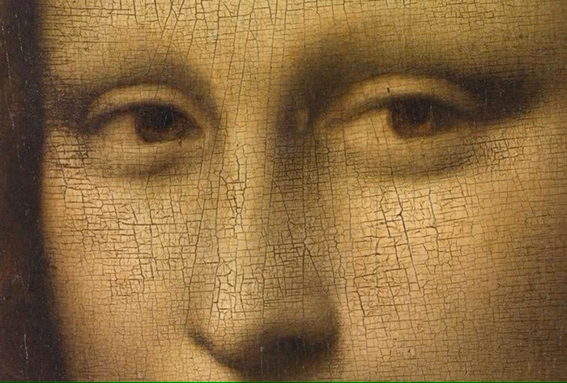

Présentation du tableau

La Joconde (ou Mona Lisa) est une peinture à l'huile réalisée par Léonard de Vinci entre 1503 et 1519. Ce tableau est exposé au musée du Louvre à Paris et est l'une des œuvres les plus célèbres au monde.
Caractéristiques de l'œuvre
- Artiste : Léonard de Vinci
- Année de création : Entre 1503 et 1519
- Technique : Peinture à l'huile sur panneau de bois de peuplier
- Dimensions : 77 cm × 53 cm
- Localisation : Musée du Louvre, Paris
Les Mystères de la Joconde
La Joconde fascine par son regard énigmatique et son sourire mystérieux. Plusieurs théories existent sur l'identité du modèle, les techniques utilisées par Léonard de Vinci et les significations cachées dans l'œuvre.
